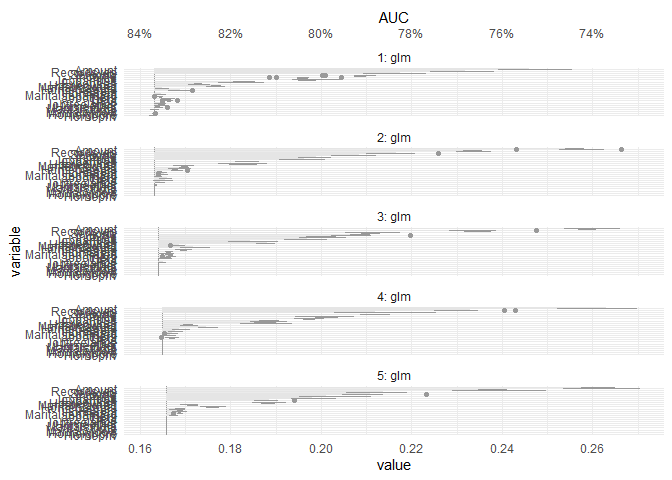

The goal of celavi is to join the main features of two functions
that I use really often vip::vi_permute and DALEX::model_parts. Both functions do the same task of calculate drop out loss via permutation, but they have different features and approach.
In the case of vip::vi_permute is more direct to use (imho), have an implementation for parallel processing, can be used with a sample_frac parameter. Otherwise, in the case of DALEX::model_parts I like the user can give custom metrics as a loss functions, the base line and full model references values, and the plots.
To that features I added some features to my personal taste.
- Add progress bars to the sequential and parallel process using
progress::progress_barandprogressr::progress - Give the possibility of to the user to access to the raw data.
- Verbose information using
cli::cli_alert_info.
References
The vip package from koalaverse, and the DALEX package from MI². In particular these links are awesome: https://koalaverse.github.io/vip/articles/vip.html and https://ema.drwhy.ai/featureImportance.html#featureImportanceR.
Please, visit the links and used that awesome tools!
Installation
You can install the development version of celavi from GitHub with:
# install.packages("devtools")
devtools::install_github("jbkunst/celavi")Example I: Variable Importance
library(celavi)
lm_model <- lm(mpg ~ ., data = mtcars)
set.seed(123)
vi <- celavi::variable_importance(lm_model, data = mtcars, iterations = 10)
#> ℹ Using all variables in data.
#> ℹ Trying extract response name using `formula`.
#> ℹ Using `mpg` as response.
#> ℹ Using root mean square error as loss function.
#> ℹ Using `base::identity` as sampler.
#> ℹ Using `predict.lm` as predict function.
dplyr::glimpse(vi)
#> Rows: 120
#> Columns: 3
#> $ variable <chr> "am", "am", "am", "am", "am", "am", "am", "am", "am", "am", …
#> $ iteration <int> 1, 2, 3, 4, 5, 6, 7, 8, 9, 10, 1, 2, 3, 4, 5, 6, 7, 8, 9, 10…
#> $ value <dbl> 2.718690, 2.813226, 2.629602, 3.006321, 2.810651, 2.780096, …
nrow(vi)
#> [1] 120
# nrow(vi) = (ncol(mtcars) - 1 + 2) * iterations
plot(vi)
And compare with other model.
rf <- randomForest::randomForest(mpg ~ ., data = mtcars)
vi_rf <- celavi::variable_importance(rf, data = mtcars, iterations = 10)
#> ℹ Using all variables in data.
#> ℹ Trying extract response name using `formula`.
#> ℹ Using `mpg` as response.
#> ℹ Using root mean square error as loss function.
#> ℹ Using `base::identity` as sampler.
#> ℹ Using `predict.randomForest` as predict function.
plot(vi, vi_rf)
From the previous chart we can tell the random Forest have small (better) RMSE and is less affected in terms of predictability by removing variables, wt variable for example.
Example II: Feature Selection
set.seed(123)
data(credit_data, package = "modeldata")
credit_data <- credit_data[complete.cases(credit_data),]
credit_data$Status <- as.numeric(credit_data$Status) - 1
# convert factor to dummies (to compare results with glmnet)
credit_data <- as.data.frame(model.matrix(~ . - 1, data = credit_data))
trn_tst <- sample(
c(TRUE, FALSE),
size = nrow(credit_data),
replace = TRUE,
prob = c(.7, .3)
)
credit_data_trn <- credit_data[ trn_tst,]
credit_data_tst <- credit_data[!trn_tst,]
fs <- feature_selection(
glm,
credit_data_trn,
response = "Status",
stat = min,
iterations = 10,
sample_frac = 1,
predict_function = predict.glm,
# function accepts specific argument for the fit function
family = binomial
)
#> ℹ Using 1 - AUCROC as loss function.
#> ℹ Fitting 1st model using 23 predictor variables.
#>
#> ── Round #1 ──
#>
#> ℹ Using `dplyr::sample_frac` as sampler.
#> ℹ Removing 5 variables. Fitting new model with 18 variables.
#>
#> ── Round #2 ──
#>
#> ℹ Using `dplyr::sample_frac` as sampler.
#> ℹ Removing 2 variables. Fitting new model with 16 variables.
#>
#> ── Round #3 ──
#>
#> ℹ Using `dplyr::sample_frac` as sampler.
#> ℹ Removing 1 variables. Fitting new model with 15 variables.
#>
#> ── Round #4 ──
#>
#> ℹ Using `dplyr::sample_frac` as sampler.
#> ℹ Removing 1 variables. Fitting new model with 14 variables.
#>
#> ── Round #5 ──
#>
#> ℹ Using `dplyr::sample_frac` as sampler.
fs
#> # A tibble: 5 × 5
#> round mean_value values n_variables variables
#> <dbl> <dbl> <list> <int> <list>
#> 1 1 0.163 <dbl [10]> 23 <chr [23]>
#> 2 2 0.163 <dbl [10]> 18 <chr [18]>
#> 3 3 0.164 <dbl [10]> 16 <chr [16]>
#> 4 4 0.165 <dbl [10]> 15 <chr [15]>
#> 5 5 0.166 <dbl [10]> 14 <chr [14]>
plot(fs)
We have a simpler model without loss significance predictive performance.
Nopw we can compare with some other feature selection techniques.
mod_fs <- attr(fs, "final_fit")
mod_full <- glm(Status ~ ., data = credit_data_trn, family = binomial)
mod_step <- step(mod_full, trace = FALSE)
# wrapper around glmnet::cv.glmnet()
mod_lasso <- risk3r::featsel_glmnet(mod_full, plot = FALSE)
models <- list(
"fs by vip" = mod_fs,
"stepwise" = mod_step,
"lasso" = mod_lasso
)
purrr::map_df(
models,
risk3r::model_metrics,
newdata = credit_data_tst,
.id = "method"
)
#> # A tibble: 3 × 5
#> method ks auc iv gini
#> <chr> <dbl> <dbl> <dbl> <dbl>
#> 1 fs by vip 0.530 0.839 1.89 0.679
#> 2 stepwise 0.536 0.842 1.91 0.685
#> 3 lasso 0.527 0.839 1.91 0.679Not the best model in terms of metrics. But if we see the number of coefficients:
purrr::map_df(
models,
~ tibble::tibble(`# variables` = length(coef(.x))),
.id = "method"
)
#> # A tibble: 3 × 2
#> method `# variables`
#> <chr> <int>
#> 1 fs by vip 15
#> 2 stepwise 18
#> 3 lasso 18We can check the loss in each iteration, so you can choose what combintations of loss/number of variables you want.
do.call(plot, attr(fs, "variable_importance")) +
ggplot2::scale_y_continuous(
breaks = scales::pretty_breaks(7),
sec.axis = ggplot2::dup_axis(~ 1 - .x, name = "AUC", labels = scales::percent)
)
#> Scale for 'y' is already present. Adding another scale for 'y', which will
#> replace the existing scale.
fs
#> # A tibble: 5 × 5
#> round mean_value values n_variables variables
#> <dbl> <dbl> <list> <int> <list>
#> 1 1 0.163 <dbl [10]> 23 <chr [23]>
#> 2 2 0.163 <dbl [10]> 18 <chr [18]>
#> 3 3 0.164 <dbl [10]> 16 <chr [16]>
#> 4 4 0.165 <dbl [10]> 15 <chr [15]>
#> 5 5 0.166 <dbl [10]> 14 <chr [14]>